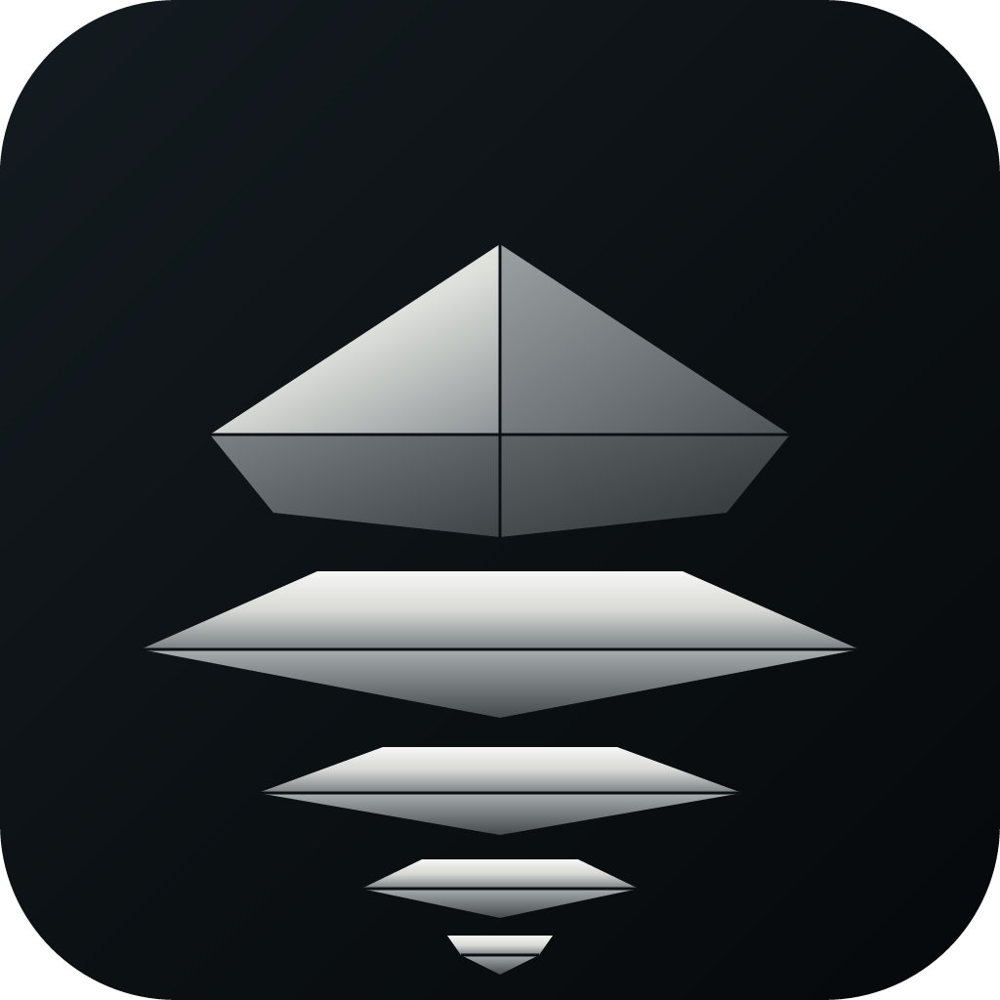
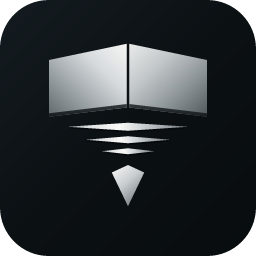

Vector reconstruction · 1024 master + preview sizes · now also a React Native component
small variant measures
75.4% wide against the spec's 60–64%. That is the 1.22× scale that
keeps all five elements separate at 32px. It affects tiny renders and the 38px in-app badge
only — not the shipped app icon, which uses the standard geometry at 61.7%.
Decide keep or revert; see the tradeoff table below.


| Gate | Command | Result |
|---|---|---|
| Type safety | npx tsc --noEmit | PASS — zero errors |
| Metro bundle | npx expo export --platform ios | PASS — 1311 modules |
| Geometry vs master | npm run test:logo | PASS — 19 layers, exact |
| App Store icon rules | 1024×1024, fully opaque | PASS |
| Android safe zone | symbol ≤ 66% | PASS — 61.7% (square variant) |
| Prebuild (android) | npx expo prebuild | PASS |
| Prebuild (ios) | — | SKIPPED — Expo cannot generate iOS projects on Windows |
| ESLint | — | N/A — no ESLint config in this project |
wd audit | — | N/A — wd on npm is Selenium, not the WebDesigner tool |
tests/logo-geometry.test.mjs
parses this master SVG into an ordered layer list, rebuilds the same list from the
geometry compiled into SognSafeLogo.tsx, and compares them layer-by-layer
in draw order. Exact equality — a coordinate typo, dropped layer or reordering
fails it. Wired into npm test.
| Check | Measured | Spec | Result |
|---|---|---|---|
| Symbol width | 61.7% | 60–64% | PASS |
| Symbol height | 63.5% | 62–66% | PASS |
| Horizontal centre | offset x 0.0 | centred | PASS |
| Vertical centre | offset y −12.0 | centred | PASS — 1.2% high |
| Left face luma | 183.8 | brighter | PASS |
| Right face luma | 166.6 | darker | PASS |
| Background | rgb(19,26,30) | deep blue-black | PASS |
| Corner radius | 195px | 180–210px | PASS |
| Path count | 12 / 7 | < 30 | PASS |
| App Store icon | 1024², 0 transparent px | opaque | PASS |
| Android safe zone | 61.7% | ≤ 66% | PASS |
| small variant width | 75.4% | 60–64% | DEVIATION |
| monoWhite on dark | 19.2:1 flat · 83% @ 32px | ≥ 3:1 | PASS |
| monoBlack on light | 19.3:1 flat · 80% @ 32px | ≥ 3:1 | PASS |
| File | Purpose |
|---|---|
SOGN-SAFE-App-Icon-1024.svg | Master — rounded square, editable vector |
SOGN-SAFE-App-Icon-FullBleed.svg | Opaque square, no radius — App Store submission |
SOGN-SAFE-App-Icon-Small.svg | Optimised for 32px (75.4% — see deviation) |
Symbol-Only-*.svg | Tight-cropped symbol (viewBox 140 119 744 762) |
Symbol-Only-Square-*.svg | Square 1024² transparent canvas — safe for adaptive icons |
png/ png-small/ png-fullbleed/ | Renders at 1024·512·256·128·64·32 |
png-symbol/ png-mono-white/ png-mono-black/ | Tight-cropped symbol renders |
png-symbol-square/ png-symbol-square-mono/ | Square symbol renders |
src/components/brand/SognSafeLogo.tsx | React Native component — 6 variants |
tests/logo-geometry.test.mjs | Fidelity gate — compares component to this master |
TASK_PLAN.md | Plan + implementation record |